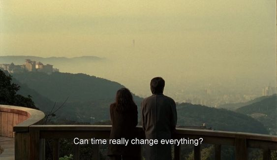

Bagian 5
Aku tidak bisa menjanjikan apapun kepadamu di masa depan. Aku pun tidak bisa menghapus kenangan-kenangan pahitmu di masa lalu. Tapi aku di sini sekarang untukmu, aku ingin mengulurkan tanganku dengan penuh ketulusan untukmu. Aku mengulurkan tanganku dan meminta sebagian kecil saja dari hatimu. Bagian yang akan aku jadikan indah, bagian yang mengingatkanmu bahwa cinta itu menenangkan. Bahwa cinta tidak akan membuatmu mempertanyakan nilai-nilai mu. Bahwa cinta akan memberikanmu ruang untuk benar-benar menjadi dirimu seutuhnya, tanpa adanya rasa takut.
Next